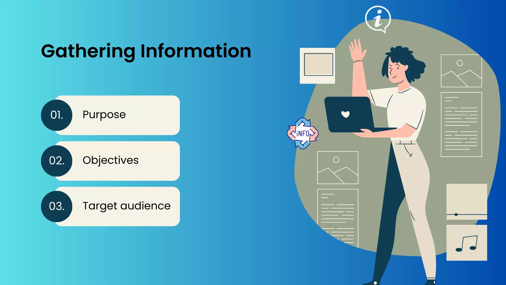

Information Gathering

Gathering information is a vital step in the web development cycle. It is where you find out what your client wants from you. If they have existing branding, you collect it to make use of it in the website. There are many things you have to consider when gathering relevant information. Each website serves a purpose. This will differ depending on what kind of website you are making, so it is important to find out.
There are many questions you can consider during this step to ensure you are delivering a website your client is satisfied with, such as:
- Who is your target audience?
- What does your website stand for?
- What goals is your website meant to accomplish?
- What kind of aesthetic should your website belong to?
- What features need to be included in your website?
- What existing content and information needs to be included in your website?